01FACE
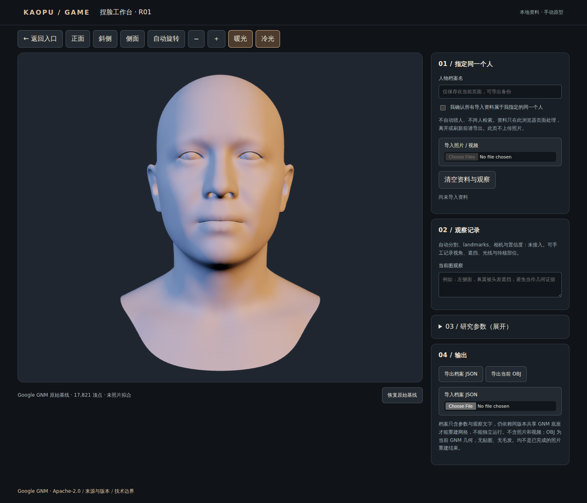
GOOGLE GNM
照片拟合实验 R02
本地稀疏照片拟合＋头发/眉毛/睫毛
原始头模预览 · 真人相似度未验 · 非照片级重建；毛发需点击添加
CREATIVE LAB / 一个总入口
选一张图进入。模型、工具与方法，各自标清真实进度。
01 / HUMAN
三位老师，各有独立入口

GOOGLE GNM
本地稀疏照片拟合＋头发/眉毛/睫毛
原始头模预览 · 真人相似度未验 · 非照片级重建；毛发需点击添加
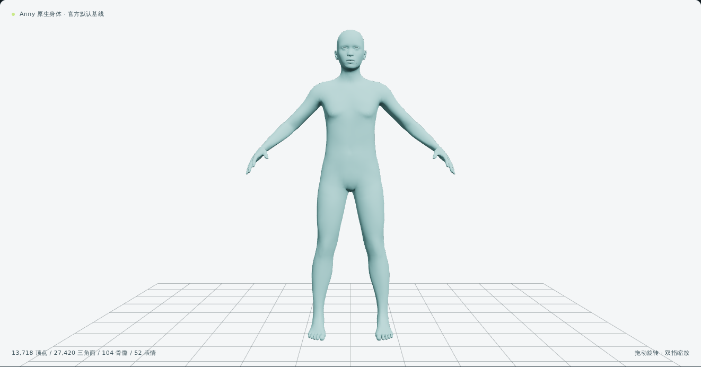
ANNY
官方语义修正版 · 52 表情
原生头/手部件、其他 rig、自交诊断待补
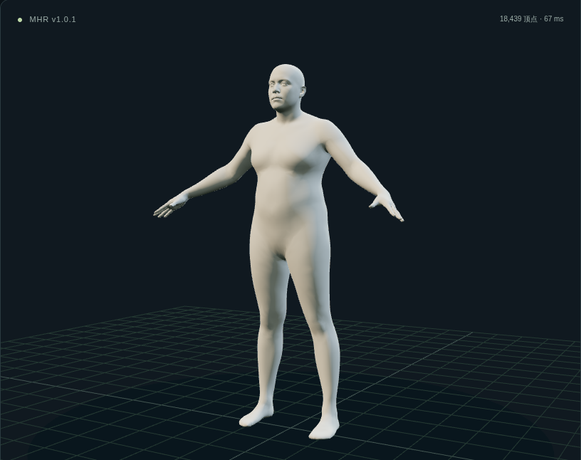
META MHR
身份形体分量 · 骨骼姿态与手部
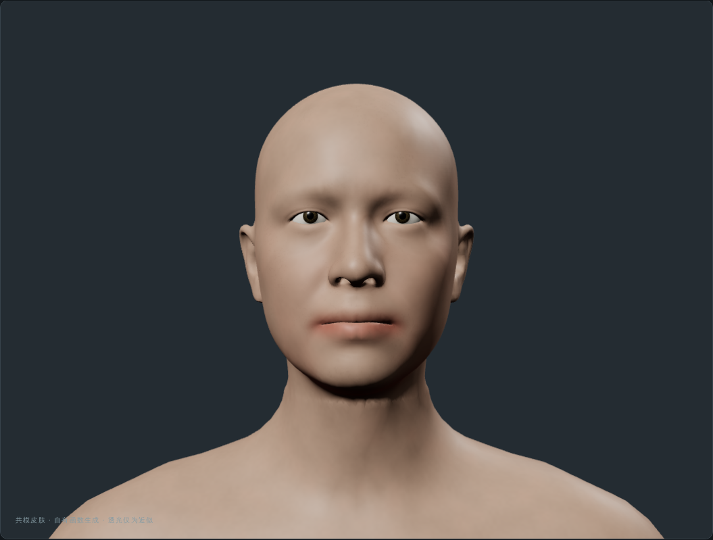
SKIN / 独立分层实验
三肤色、分区毛孔、白模与分层 A/B 对照，使用同一份头身网格。
透光仅近似，非 SkinGen 等效或真实 SSS；角膜精修与整脸真人成品尚未完成。
02 / CLOTHING
布片、短裤、无袖与短袖；均标清有限改版范围
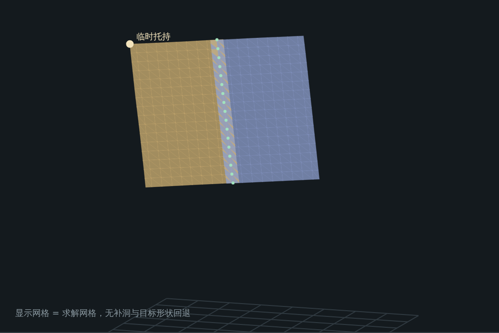
R1 / 原创接缝约束
修改尺寸、激活接缝、观察求解。保留临时托持等真实边界。
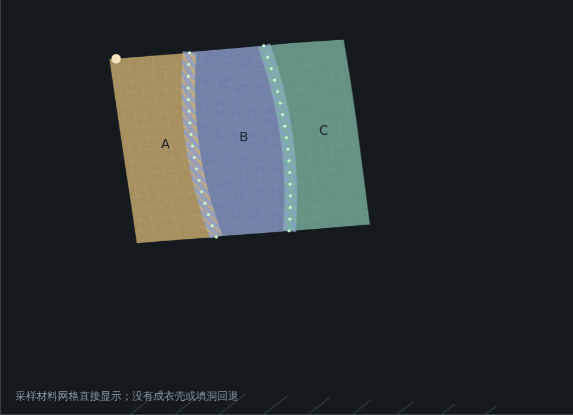
R2 / PatternGSL 方法学习
三片曲缝与规范编辑。当前手工输入，不是照片 AI 预测。
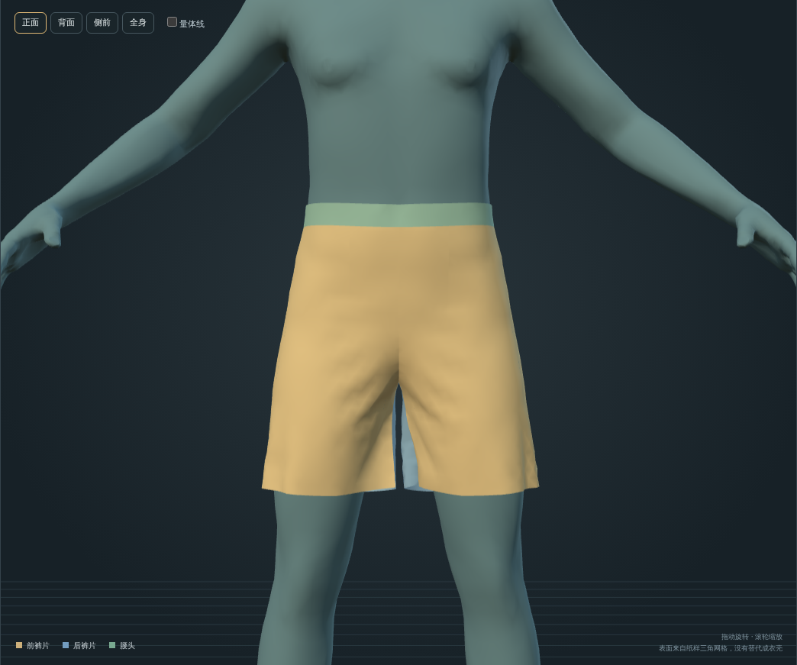
R3 / GarmentCode 方法学习
六片纸样、28组缝边、6处省道。单一合成人体上有限调整裤长/腰口，重新裁片、缝合、穿体，可保存配方重建。
净缝线实验；局部应变约15%，真实缝份/厚度未建模，部分尺寸仍报穿插。
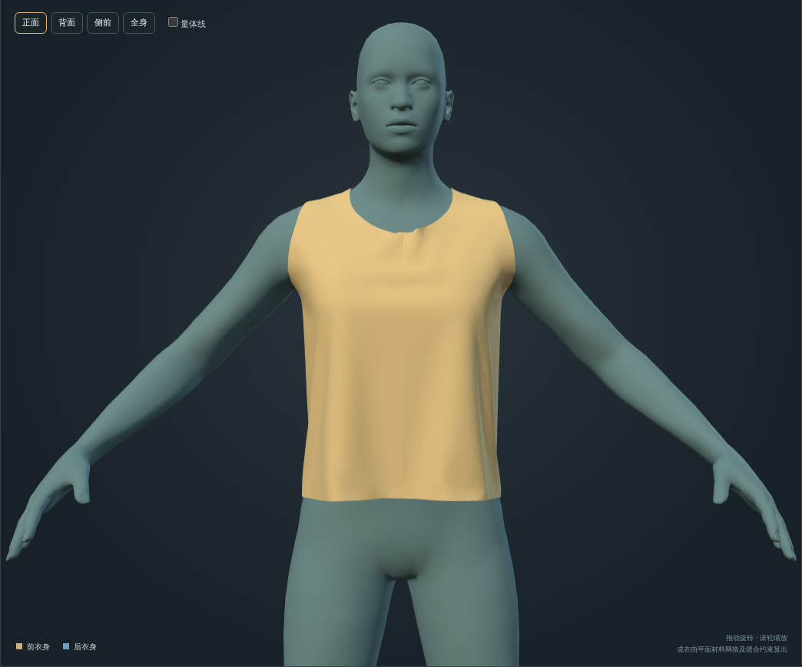
R4 / GarmentCode 方法学习
4片净纸样、6组缝边。有限调整衣长与下摆，重新裁片、缝合、穿体，可保存配方重建。
固定单一合成人体；无真实缝份、包边和厚度层，材料未实测标定，局部肩缝应变约29%。其他参数仍须检查。
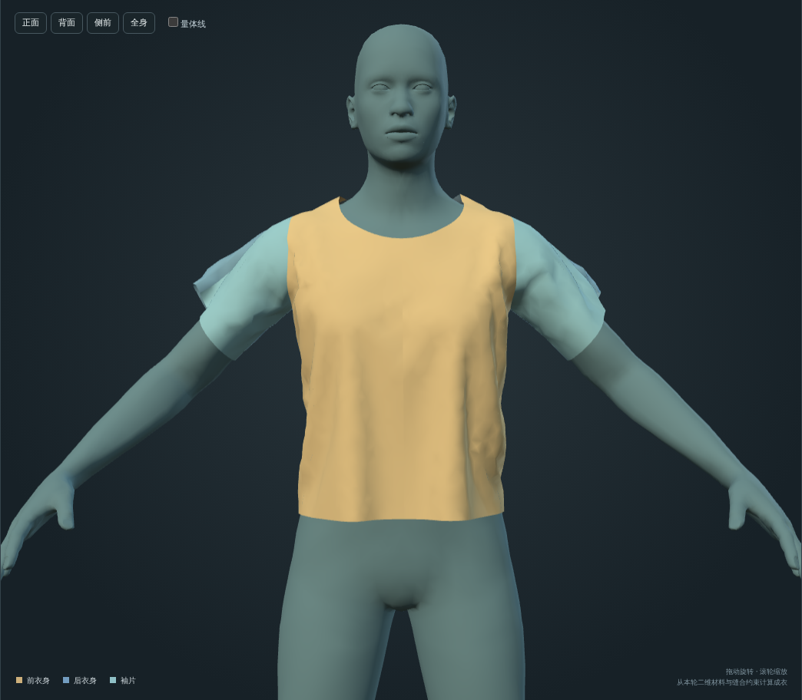
R5 / GarmentCode 方法学习
8片净纸样、16组缝边。衣长/袖长有限模板放码，以自有求解器重新缝合穿体，可保存配方与导出纸样。
固定合成人体，局部应变约40%。无真实缝份/厚度，材料未标定；自碰撞响应未开启。重算需数分钟。
03 / ANIMAL METHODS
下面是方法示意，三套模型尚未运行。人工点位与 OBJ 数值检查可用；原19动物 Atlas 完整工作台尚未上线。
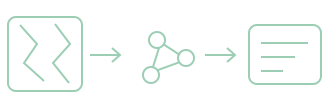
方法示意 · 非模型结果RAPID
学习个体候选、匹配证据与人工复核；不等于物种识别或三维重建。
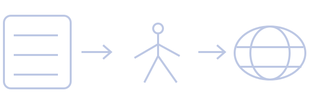
方法示意 · 非模型结果4DEquine
学习马科视频四维重建的输入输出；当前未执行原版推理。
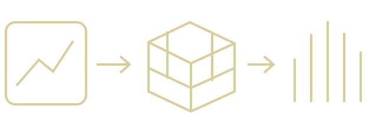
方法示意 · 非模型结果AnimalLift
学习单图规范动物表示；当前没有本网站生成的三维动物结果。
资料在本地处理。旧站入口仅核过连通性，原模型质量未在本轮重新验收。
04 / HAIR
QUICK GUIDE
Face R02 本地稀疏拟合与毛发；Anny R02 身体与表情；MHR 身体姿态。共模为部分迁移，皮肤独立。
R1/R2 看接缝与规范；R3 调短裤，R4 调无袖上衣，R5 调基础短袖。均为固定合成人体上的有限改版实验。
目前可学方法、做人工点位与 OBJ 数值检查；方法图不是三维动物成果。
原男性 R9 可进入。TEN24 原女性仍待接入，两者不混用。
所有入口在同一标签页打开，可使用浏览器返回。人物和服装工作台提供总览返回链接；动物学习与旧毛发页面保留各自原导航。
本页只加载静态预览，不同时启动多个三维运行时。人物与布片图是实际渲染；动物方法图是明确标注的自绘示意；TEN24没有以其他人头冒充。
Face R02 是本地稀疏照片拟合实验，真人相似度未验，非照片级重建。导入前需填人物档案名并勾选“同一人物”；头发、眉毛、睫毛需点击添加。Anny 的年龄和体重是形态坐标，不等于实际年龄或公斤。R02 已修正官方旋转向量与52表情语义；原生头/手部件、其他 rig、自交诊断待补。共模只迁移了 MHR 的 1/45 身份轴，未迁移其姿态与表情。
“已验收”指注明版本的浏览器测试，不等于实体手机已测试。来源、许可与完整能力边界在各工作台内保留。